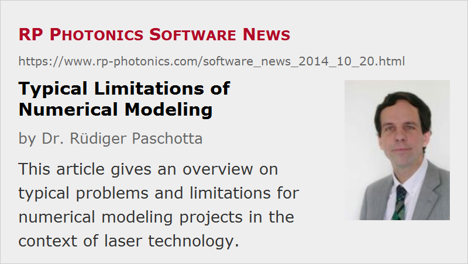

Typical Limitations of Numerical Modeling
Posted on 2014-10-20 in the RP Photonics Software News (available as e-mail newsletter!)
Permanent link: https://www.rp-photonics.com/software_news_2014_10_20.html
Author: Dr. Rüdiger Paschotta, RP Photonics Consulting GmbH
Abstract: This article gives an overview on typical problems and limitations for numerical modeling projects in the context of laser technology.

Without doubt, numerical modeling can bring extremely useful results, and often at a much lower cost than with alternative approaches such as trial & error in the laboratory. However, modeling attempts can fail in many ways. In this article, I want to give an overview on typical problems and limitations, and of course mention possibilities to deal with them.
Oversimplified or Overly Complicated Models
It is a basic principle that a numerical model, and indeed any kind of model we ever use, should be simpler than the reality which it tries to describe. After all, the purpose is essentially to increase the understanding of the reality which can be rather complicated.
When going too far in terms of simplification, the capability of a model to give correct answers can of course suffer. For example, one may construct a model describing the optical power evolution within a Q-switched laser. It is often a good idea to assume fixed transverse beam profiles for that purpose, is that makes the calculations far simpler and more efficient. However, the model will then obviously not be able to describe possible gain guiding effects in the laser. That may be perfectly okay if we know in advance that gain guiding cannot have substantial effects in our laser.
On the other hand, it would often be a very bad idea to strive for the most sophisticated and comprehensive type of model. For example, if we unnecessarily include full numerical beam propagation in a bulk or fiber laser where we can know that the transverse profiles cannot significantly change, we do not only invest into an overly complicated model, but also pay a substantial price in terms of computation time and possibly suffer from more complicated handling.
Determining what type of model is most appropriate for given purpose is often not a trivial task. For good decision, one does not only need a thorough understanding of the system of interest, but also one needs to be aware of possible effects occurring in the system and to judge which aspects are really relevant. In addition, of course one should be able to judge how much additional effort and computation time will be required when including certain additional aspects.
Note that my previous article "What Makes a Good Physics Model?" gives more details on such aspects. At this point, I only want to add one essential advice: before investing anything into modeling, one should carefully state the questions which should be answered using the model. As long as one does not have these questions, one cannot possibly determine what kind of modeling will be appropriate.
Hidden Errors
A numerical model may produce wrong results if it's implementation contains some hidden errors. Unfortunately, it is often not easy to check the validity of a model. For this aspect, I refer to the article "Validating Numerical Simulation Software".
Poor Software
In relatively trivial cases, it may not be important to have particularly good software. For example, every simple resonator design software should be suitable for calculating the basic mode properties of a resonator with a given design. However, optimizing a resonator design is already much more difficult.
There are software products which really look appealing at the first glance, exhibiting a beautiful graphical user interface. However, they may still be poor in terms of flexibility, for example. For example, it may seem simple to click on graphically illustrated optical elements in order to modify their properties. But what if you have a sequence of elements where certain elements are repeated many times – will you have to click so many times and do the modifications for every single instance? Can you have certain parameters automatically calculated from some basic inputs, or do you have to calculate them yourself and type them into some forms? In practice, many programs become hardly usable because it would be far too tedious to provide them with the required inputs, particularly in optimization procedures.
In our software products, we use a powerful script language which allows the user to do real programming. For example, in our advanced resonator design software you could program a loop which generates a sequence of N mirrors and corresponding air spaces, where parameters like incidence angles are automatically calculated. On our website, we have an example for a multipass amplifier.
Missing Data
In many cases, a substantial number of data such as material parameters are required as inputs for a numerical model. It can be difficult to acquire all these data with a sufficient degree of reliability. For example, laser models often require spectroscopic data such as upper-state lifetimes and transition cross sections. For common laser gain media, such data can be found in the literature. When working with less common materials, however, available data may be incomplete or uncertain. Sometimes, additional data will have to be measured before a numerical model can be put to work.
Note, however, that a complete and reliable data set is not always a prerequisite for doing useful work with a model. First of all, one purpose of modeling can be exactly to extract such data from experimental measurements or to validate them. Second, many aspects can be checked even if a complete reliable data set is not available. For example, one can check how sensitive the system reacts to certain influences even if the magnitude of other influences is not exactly known. The purpose of modeling is often not just predicting some performance, but getting a good quantitative understanding of relations between different quantities.
Getting Advice on Modeling
Particularly if you are not yet very experienced in modeling, it is vital for the efficiency of your work that you can obtain competent advice. The best piece of modeling software alone cannot be sufficient in that respect.
At RP Photonics, initially we did not sell any software licenses, and only offered technical consultancy. This means that I did the modeling myself and communicated the results to my customers. Later on, however, some customers expressed an interest to have the software themselves, and in that way I more and more got into selling user licenses. However, such user licenses come with technical support, and I take this very serious. For most software packages, eight hours of technical support are included in the fee for the first user license (assuming commercial licenses). Moreover, I do not limit the technical support to clearly software-related questions like “why does this function not work as expected” or “how to create a certain diagram”. Instead, the users can ask me for all sorts of it twice in the given technical area. Effectively, the support means technical consultancy – which is in a way quite natural for company which started out with exactly that service!
This article is a posting of the RP Photonics Software News, authored by Dr. Rüdiger Paschotta. You may link to this page, because its location is permanent.
Note that you can also receive the articles in the form of a newsletter or with an RSS feed.
|  |
If you like this article, share it with your friends and colleagues, e.g. via social media:
These sharing buttons are implemented in a privacy-friendly way!